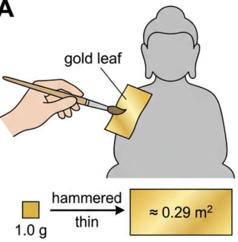
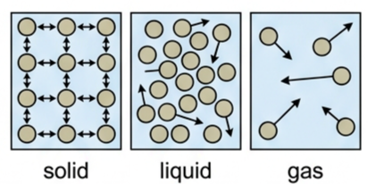
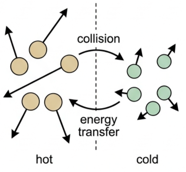

Part of B.1 Thermal Energy Transfers
· Unit B — IB Physics 2023
1 Lesson 1 of 5 · B.1 Thermal Energy Transfers
Temperature and Internal Energy
Every substance is a swarm of particles in constant motion. This lesson builds the vocabulary — internal energy, thermal energy, temperature — needed to describe that motion precisely, then connects it to the microscopic equation that defines what temperature actually is.
🥇 Hook – the gold leaf mystery
Imagine you're in Thailand, watching someone place delicate gold leaf onto a Buddha statue. The gold is hammered so thin you could almost see through it. Here's the challenge: if you had just 1 gram of gold, how large a sheet of gold leaf could you make?

Fig 1 — Gold leaf is hammered thin enough to see through. A single gram covers an area you wouldn't expect.
💡 Diagnostic question — how can a single gram of gold cover such a large area? What does this tell us about the arrangement of gold atoms? Gold atoms pack together with almost no empty space between them, so a given mass occupies a very small volume — and a small volume, spread thin enough, stretches a long way. We'll calculate exactly how far later in this lesson.
🧩 Internal energy, thermal energy and heat
All substances contain particles with kinetic and potential energy. The total of these is internal energy. Energy transferred from a hotter object to a colder one is thermal energy — also called heat. These are three separate terms and it matters which one you use.
Term
Definition in this course
Common misconception
Internal energy
Total kinetic + potential energy of ALL particles in a substance
Often confused with "heat"
Thermal energy
The transfer of energy due to a temperature difference
Incorrectly used as "energy inside"
Heat
Same as thermal energy (a transfer)
Widely misused interchangeably with internal energy
🤔 TOK — does the precision of language in physics eliminate all ambiguity? Why do we have three terms for such similar concepts?
The kinetic theory of matter explains this in terms of particle arrangement. Complete this table for the three states:
Property
Solid
Liquid
Gas
Arrangement
Regular pattern
No pattern
No pattern
Forces between particles
Strong, fixed positions
Some forces overcome
Negligible
Separation
Close together
Still close
Much further apart
Motion
Vibrate in fixed positions
Limited random movement
High-speed random motion

Fig 2 — Solids: a fixed lattice, particles vibrating in place. Liquids: still close, but free to slide past each other. Gases: widely separated, moving randomly.
Gas molecules are spaced roughly 10 molecular diameters apart — about 1000× more than in a liquid or solid. That's why you can walk through air but not through a wall.
Density · SI unit kg m⁻³
$$\rho = \frac{m}{V}$$
Example: 125 g of olive oil has a volume of 137 cm³. Converting, \(m = 0.125\) kg and \(V = 1.37\times10^{-4}\) m³, so \(\rho = 0.125 / (1.37\times10^{-4}) = 912\ \text{kg m}^{-3}\).
🌡️ Temperature scales
The Celsius scale is fixed by the freezing point of water (0°C) and its boiling point (100°C), with 100 equal divisions between them.
The Kelvin scale is absolute: zero kelvin (0 K) is absolute zero, -273.15°C, the coldest temperature physically possible. A change of 1 K equals a change of 1°C.
Fig 3 — The two scales share the same size of division; they only differ in where zero is placed.
Task
Answer
Convert -114°C to K
159 K
Convert 933 K to °C
660°C
Change from +10°C to -10°C, in K
20 K change
⚛️ The microscopic view — the Boltzmann connection
Temperature isn't just a number on a scale — it's a measure of how energetically particles are moving. For an ideal gas, the average random translational kinetic energy per particle is:
Average kinetic energy per particle
$$\bar{E}_{\text{k}} = \tfrac{3}{2}k_{\text{B}}T$$
where \(k_{\text{B}} = 1.38\times10^{-23}\ \text{J K}^{-1}\) is the Boltzmann constant and \(T\) is temperature in kelvin.

Fig 4 — Faster (hotter) particles collide with slower (cooler) ones, transferring kinetic energy until the two groups share the same average.
✈️ The moving aircraft problem — a gas cylinder at 20°C is placed on an aircraft flying at 200 m s⁻¹. What happens to the temperature? The ordered motion of the aircraft adds to the ordered kinetic energy of the particles, but the random kinetic energy — the part that determines temperature — is unchanged. The temperature does not increase.
Internal energy is the total random kinetic energy plus the total potential energy of all the particles in a substance. Particles can have three forms of kinetic energy: vibrational (oscillating about a fixed position, dominant in solids), translational (moving from place to place, dominant in liquids and gases), and rotational (molecules spinning). In solids and liquids, electrical forces between particles give significant potential energy; in gases, particles are too far apart for this to matter, so internal energy there is almost entirely kinetic.
$$U = E_{\text{k}} + E_{\text{p}}$$
📜 Nature of Science — before kinetic theory, scientists believed in "caloric fluid", an invisible fluid flowing from hot to cold objects. It couldn't explain why rubbing your hands together generates heat with no fluid flowing anywhere.
📈 Graph mastery – reading temperature graphs
Graph type
Axes (X, Y)
Shape
What to read
Cooling / warming curves
Time · Temperature
One curve falls, one rises, both level off and meet
The point where the curves converge is thermal equilibrium — same final temperature, no more net transfer
Average KE vs temperature
Temperature, \(T\) / K · \(\bar{E}_{\text{k}}\) / J
Answer: \(\bar{E}_{\text{k}} = 6.1\times10^{-21}\ \text{J}\) per particle.
🌍 Real-world: why ice floats
Water reaches its maximum density at 4°C. Ice is less dense than liquid water — 910 kg m⁻³ compared with 1000 kg m⁻³ — so it floats. This is why lakes freeze from the top down, insulating the water below and letting fish survive winter in liquid water beneath the ice.
✓ Examiner tip: "ice floats because it's frozen" earns nothing. State the actual densities and say ice is less dense than the water it forms in.
🚀 HL extension – the full kinetic theory equation
The equation \(\bar{E}_{\text{k}} = \tfrac32 k_{\text{B}}T\) comes from a more complete kinetic theory result linking pressure, volume and molecular speed:
$$PV = \tfrac{1}{3}Nm\overline{v^2}$$
where \(N\) is the number of particles, \(m\) the mass of one particle, and \(\overline{v^2}\) the mean square speed. Challenge: if a fixed volume of gas is heated so its temperature doubles (in kelvin), what happens to the pressure, assuming volume and particle number stay fixed? Answer: pressure doubles — \(\bar{E}_{\text{k}} \propto T\) and \(PV \propto Nm\overline{v^2} \propto \bar{E}_{\text{k}}\), so at fixed \(V\) and \(N\), \(P \propto T\).
⚠️ Trap corner – common mistakes
Misconception
Correct view
Heat is energy stored inside a hot object
Heat (thermal energy) is energy in transit because of a temperature difference — it is never "contained"
Internal energy and thermal energy mean the same thing
Internal energy is the total \(E_{\text{k}}+E_{\text{p}}\) of all particles; thermal energy is specifically the transfer between objects at different temperatures
A faster-moving reference frame makes gas molecules hotter
Only random kinetic energy determines temperature — the aircraft's ordered motion doesn't add to it
Gases have large potential energy between particles
Gas particles are far apart, so potential energy is negligible; almost all their internal energy is kinetic
⚠️ Most common slip: describing heat as something an object "has" or "contains". Heat/thermal energy is always a transfer between two objects at different temperatures — say "energy transferred", never "heat contained".
U = Ek + Epthermal energy = energy in transitT(K) = θ(°C) + 273Ēk = (3/2)kBTkB = 1.38×10⁻²³ J K⁻¹ρ = m/Vthermal equilibrium: no net transferconduction · convection · radiation
Practice check — multiple choice
1. Which best describes the difference between thermal energy and internal energy?
A They are identical terms for the same quantity
B Internal energy is the total Ek + Ep of all particles in a substance; thermal energy is the energy transferred due to a temperature difference
C Thermal energy is stored inside a hot object; internal energy is not
D Internal energy only applies to gases
2. 300 K is equivalent to
A 27°C
B 300°C
C -27°C
D 573°C
3. The average translational kinetic energy of a gas particle at 50°C is closest to
A \(6.7\times10^{-21}\) J
B \(4.1\times10^{-21}\) J
C \(1.38\times10^{-23}\) J
D \(3.3\times10^{2}\) J
4. Thermal energy can transfer across a vacuum by
A Conduction
B Convection
C Radiation
D No mechanism transfers energy across a vacuum
5. A sealed gas cylinder at 20°C is placed on an aircraft flying at 200 m s⁻¹. Measured on the aircraft, the gas temperature
A Increases, because molecules gain extra kinetic energy from the plane's motion
B Stays the same — the aircraft's ordered motion doesn't add to the gas's random kinetic energy
C Decreases due to lower air pressure at altitude
D Doubles
Practice check — fill in the blanks
Complete the statements:
Internal energy is the total random kinetic energy plus the total energy of all the particles in a substance. Thermal energy describes the of energy due to a temperature difference. The kelvin scale is related to Celsius by \(T(\text{K}) = \theta(°\text{C}) + \) . The average kinetic energy of a gas particle is given by \(\bar{E}_{\text{k}} = \tfrac32\) \(T\). Particles in a solid have mainly kinetic energy, while particles in a gas have mainly kinetic energy. Two objects in thermal contact reach thermal when there is no net transfer of energy between them.
Exam‑style questions
Exam question · Explain
Q1. Explain the difference between thermal energy and internal energy. [2 marks]
✓ Internal energy is the total kinetic + potential energy of all the particles in a substance. ✓ Thermal energy (heat) is the energy transferred between objects because of a temperature difference — it is not a stored quantity.
Exam question · Calculate
Q2. Convert 300 K to degrees Celsius. [1 mark]
✓ \(\theta = T - 273 = 300 - 273 = 27°\text{C}\).
Exam question · Calculate
Q3. Calculate the average translational kinetic energy of a gas particle at 50°C. [3 marks]
Q4. State two forms of kinetic energy that particles can have, other than translational. [2 marks]
✓ Vibrational — particles oscillating about a fixed position, dominant in solids. ✓ Rotational — molecules spinning, seen in gases and liquids.
Exam question · Explain
Q5. Explain why thermal energy can be transferred across a vacuum. [2 marks]
✓ Thermal radiation is electromagnetic waves emitted by a surface. ✓ Electromagnetic waves require no medium to travel, so radiation — unlike conduction or convection — works through a vacuum.
Exam question · Show that / Calculate
Q6. A gold ring has a mass of 3.20 g and a volume of \(1.66\times10^{-7}\) m³. The density of gold is 19,300 kg m⁻³. (a) Show that this volume is consistent with the ring being pure gold. (b) The same 3.20 g of gold is instead hammered into a foil of thickness \(2.00\times10^{-7}\) m. Calculate the area of the foil. [4 marks]
✓ (a) \(V = m/\rho = (3.20\times10^{-3})/19{,}300 = 1.66\times10^{-7}\ \text{m}^3\) — matches the given volume. ✓ (b) Same volume, area \(= V/\text{thickness}\) ✓ \(= (1.66\times10^{-7})/(2.00\times10^{-7})\) ✓ \(= 0.829\ \text{m}^2\).